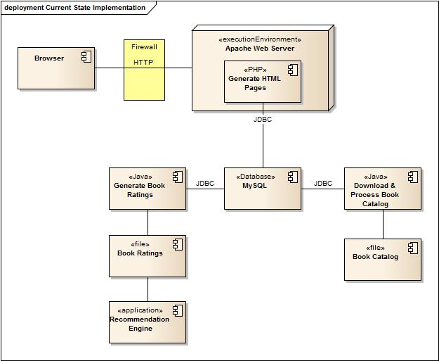
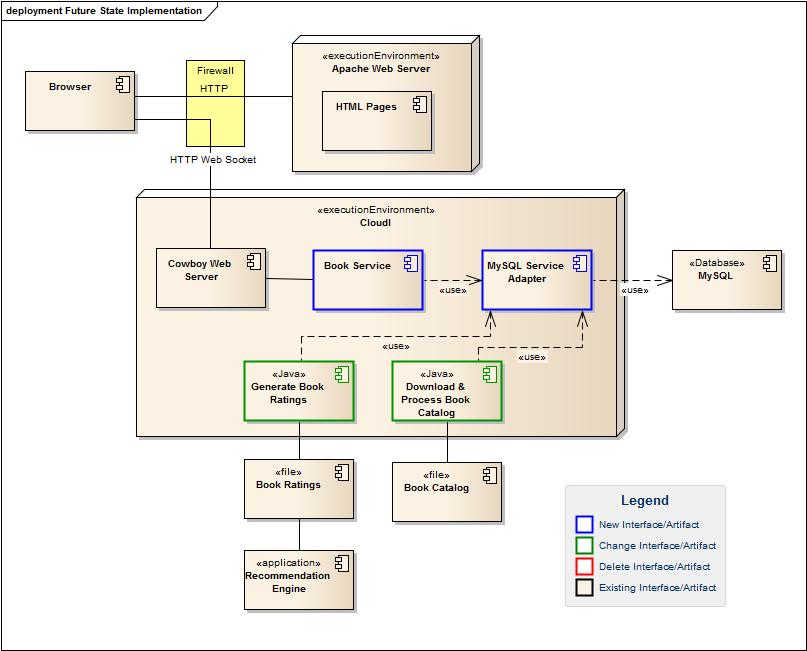
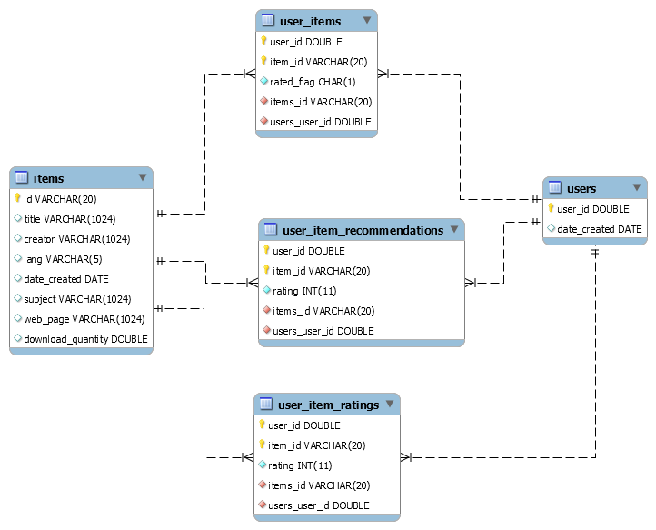

Welcome to the CloudI Tutorial¶
Contents:
Introduction¶
So What’s CloudI?¶
CloudI is an open-source integration cloud that can be deployed publicly or privately. It supports the development of services that can be created in many different programming languages and provides scalability and fault-tolerance.
More information can be found in the CloudI FAQ here .
About This Tutorial¶
This tutorial should help you understand the design decisions and implementation steps needed to use CloudI for your own projects. A small real-world application is used for illustration and the full source code for the application is located here in case you want to look at the complete implementation.
This tutorial assumes that you have successfully installed CloudI on a development system and can successfully start and stop it.
Note
The examples shown here were developed on a machine using CloudI version 1.4.0 running Ubuntu Linux version 14.04 operating system.
Where to Get Help¶
See the Support information on the CloudI web site. In addition, there is a Google Group named CloudI Questions that contains discussions of new releases and other user-oriented questions.
Book Recommendation Application¶
Background¶
The application used for this tutorial is a web-based book recommendation system that provides a list of books available on Project Gutenberg and provides recommendations of other books. You can run the application at http://www.impactsoftwarelabs.com/book and view the full source code here
A use case diagram showing the major functions is listed below.

Current-State Implementation¶
A diagram of the current state implementation is shown below.
The primary components are:
- PHP is used to dynamically generate Web pages that are served by an Apache Web Server.
- A MySQL database is used to store the book catalog, user ratings, and recommendations.
- An open-source recommendation engine named MyMediaLite is used to process each user’s book ratings and generate recommendations.
- Small Java programs are used to interact with the recommendation engine, and to download and process the book catalog.
The book catalog contains approximately 50,000 books and the number of users is relatively small.
Future-State Implementation¶
The existing system will be re-engineered to use a broker pattern where the various components are decoupled and potentially distributed. A diagram of the future-state implementation is shown below.
The primary changes are:
- Creation of a Book Service that will interact with the web pages using a RESTful API. This service will be managed and executed using CloudI and will be created using the Erlang programming language.
- Use of a CloudI MySQL Service Adapter to provide location transparency for the MySQL database backend.
- HTML pages will call the Book Service directly using Websockets rather than being generated by PHP on the server side.
- Modify the various Java utility programs to run as CloudI services and use the Book Service rather than calling the MySQL database directly.
Note
The Future State Implementation could be further simplified by using the Cowboy Web Server rather than the Apache Web Server for serving the HTML pages. However, in the target environment there are other applications using Apache and Apache is the corporate standard.
Architectural Decisions¶
Data Transmission¶
Because the components will be developed using different languages (Javascript, Java, and Erlang), an important decision is to select a language-independent method for transmitting data between each component. CloudI does not impose a specific data transfer mechanism, so you are free to select this. In this tutorial, the JSON protocol will be used with the following libraries:
- Java - TBD
- Erlang - jsx. Note that jsx is built into the Cloudi distribution and is located in the module named cloudi_x_jsx.
Service API¶
Another important point is to design a consistent RESTful API for interacting with your services. CloudI uses the Cowboy HTTP Server to handle requests and Cowboy supports the standard range of REST methods including: GET, HEAD, POST, PUT, PATCH, DELETE, and OPTIONS. Additional information about Cowboy is available here . An excellent resource for designing RESTful API’s is located here
The table below lists the different use cases, HTTP methods, and URL examples implemented by the Book Service. Note that the top-level URL will be /book
| Use Case | Method | URL | Description |
|---|---|---|---|
| Browse New Books | GET | /book/newbooks | Return list of new books |
| Browse Popular Books | GET | /book/popularbooks | Return list of most-popular books |
| Browse Recommended Books | GET | /book/recommendedbooks?user=X | Return list of recommended books for the given User ID |
| View Book Details | GET | /book/allbooks?id=X | Return details about book given the Item ID |
| Download Book | GET | /book/download?id=X&user=Y | Download a book given the Item ID and User ID |
| Create New User | GET | /book/newuser | Create and return a new user ID |
| Get Unrated Books | GET | /book/unrated?user=X | Get the unrated books for a user ID |
| Rank Downloaded Book | POST | /book/download/ | Update a book’s rating given the User ID, Item ID, Rating |
| Add Book to Collection | POST | /book/allbooks/ | Add a book to the collection |
Note
As described later in this tutorial, access control lists are developed using URL patterns. Consequently, give some thought to developing a consistent URL structure.
Integration Method¶
There are several different methods for applications to call CloudI services. The alternatives depend on whether the application is “external” (i.e., run inside an operating system process external to the Erlang VM) or “internal” (i.e., run inside the Erlang VM). Applications written in C, C++, Java, JavaScript, Perl, PHP, Python, and Ruby would be of “external” type. Applications written in Erlang or Elixir would be an “internal” type.
| Application Type | Integration Method | Comments |
|---|---|---|
| External | HTTP | Using WebSocket protocol |
| External | Zero MQ | Use Zero MQ as a messaging bus. See Cloudi FAQ for details |
| Internal | CloudI API | Setup Subscribe/Request pairs. Messages can be synchronous, asynchrous, or broadcast |
Additional information is available in the CloudI FAQ here .
Note
Technically an Internal application could also use the HTTP or ZeroMQ integration methods, but generally the use of the CloudI API is preferred.
For this application, HTTP REST calls will be used to integrate the HTML pages with the Book Service. The HTTP request/response messages will be delivered using the WebSocket protocol. The Java Utility programs will use the ZeroMQ message bus.
Data Model¶
A diagram showing the database tables and their interrelationships is shown below.
The primary tables are the items and users table. Several cross reference tables exist including:
- user_items - tracks which items a user has downloaded and if they have submitted a rating
- user_item_recommendations - contains recommendations for a particular user
- user_item_ratings - holds the rating value that a user submits for an item
Starting Out¶
Working with CloudI¶
Setting up the CloudI Configuration¶
When CloudI is installed, several default configuration files are created. These files are located in the /usr/local/etc/cloudi directory. For initial development, the following suggested changes should be made.
- Make a copy of the original configuration file.
sudo cp /usr/local/etc/cloudi/cloudi.conf /usr/local/etc/cloudi/cloudi.conf.original
- Adjust the log setting by changing the settings in the cloudi.conf file. The original configuration has a “trace” log level and this generates a very large quantity of messages. Setting the level to “debug” is probably more appropriate for development purposes.
{logging, [
%{file, "path/to/logfile"},
{level,
debug
}, % levels: off, fatal, error, warn, info, debug, trace
...
- The standard installation includes a number of test services. These test services can consume a fair amount of CPU resources and can clutter up the logs. During active development, you are likely going to be restarting the CloudI service frequently, so it makes sense to remove anything you don’t need. You can do this by removing or commenting out the test services located in the cloudi.conf file. An example is shown below where the % sign is used to comment out an entry.
%{internal,
%"/tests/flood/",
%cloudi_service_flood,
%[{flood, "/tests/flood/java", <<"DATA">>, 1000}],
%lazy_closest,
%5000, 5000, 5000, [api], undefined, 2, 5, 300, []},
Tip
Unfortunately, you can not just remove all the test services, because some of them are used to implement core functions that you will likely need.
The Book Recommendation application requires the services shown in the following table.
| Subscription Path | Service Name | Comments |
|---|---|---|
| /cloudi/api | cloudi_service_api_requests | |
| /tests/websockets | cloudi_service_http_cowboy | |
| /tests/http | cloudi_service_http_cowboy | There are two entries for different ports |
- It is important to realize that all services listed in the cloudi.conf file must start successfully when the cloud is first started. In other words, the failure of any service listed in the configuration file will keep the entire cloud from starting to ensure an error-free starting state. Seperate configuration methods will be used to show how a cloud may grow.
Viewing Logs¶
The default location of CloudI log files is the /usr/local/var/log/cloudi/ logs directory. You can change the location of the log files by modifying the cloudi.conf file and removing the % comment.
{logging, [
%{file, "**path/to/logfile**"},
{level, debug
}, % levels: off, fatal, error, warn, info, debug, trace
Automating the Build Process¶
The typical build process when working with CloudI consists of the following steps:
- Starting CloudI
- Specifying the code path location using the CloudI Service API
- Compilation of custom code
- Adding custom code to CloudI using the CloudI Service API
- Running test services
- Stopping CloudI
The use of some sort of automated build process to perform these steps is well worth the effort. Options range from a simple shell script, to a make file, to more complicated build tool. Pick a mechanism that is simple and something that you are familiar with. An example shell script for the Book Service (see next section for more details) is listed below.
#!/bin/sh
#
# These scripts are used to load the Book services into the Cloudi engine
#
# Add the current directory to the code path
curl -X POST -d '"'`pwd`'"' http://localhost:6467/cloudi/api/erlang/code_path_add
# Compile all Erlang modules
erlc -pz /usr/local/lib/cloudi-1.3.3/lib/cloudi_core-1.3.3 -pz /usr/local/lib/cloudi-1.3.3/lib/cloudi_core-1.3.3/ebin book.erl
# Add the Book service
curl -X POST -d @book.conf http://localhost:6467/cloudi/api/erlang/services_add
# Display list of services
curl http://localhost:6467/cloudi/api/erlang/services
# Call the Book Service
curl http://localhost:6467/recommendation/book?item=45388
Common Operations¶
Common operations for working with CloudI are shown below.
1. Starting / Stopping CloudI
sudo cloudi start
sudo cloudi stop
- Listing services
This command is useful for viewing what services have been defined in the cloud.
curl http://localhost:6467/cloudi/api/erlang/services
3. Listing the code search paths
curl http://localhost:6467/cloudi/api/erlang/code_path
4. Adding a code search path
curl -X POST -d '"/home/user/code/services"' http://localhost:6467/cloudi/api/erlang/code_path_add
Working with the Database¶
Building the Database¶
A script of SQL commands needed to build the book database schema is provided in the scripts/book.sql file. You can create this schema using the MySQL command line tool as shown in the example below.
mysql -u root -p < book.sql
Creating Users¶
You also should create a special user that can connect to the book schema and can add, update, or delete records. An example using the MySQL command line tool is shown below.
mysql -u root -p < book.sql
GRANT ALL ON book.* to cloudi@'localhost' IDENTIFIED BY 'secret';
quit;
Note
The GRANT statement also tells MySQL which hosts the user is allowed to connect from. If CloudI is going to be running in a clustered configuration then you will need to add grant access for each node in the cluster.
Database Adapter Service¶
As stated in the CloudI FAQ http://cloudi.org/faq.html#7_MySQL , a CloudI database service accepts requests from other CloudI services. The service expects SQL input and provides the query result either as Erlang data or binary encoded data based on whether the input was Erlang data ora binary SQL string.
Creating the MySQL Database Service¶
CloudI provides out-of-the-box adapters for many types of databases. The example shown below is for a MySQL database, but the same general steps would apply for other database types.
- Stop CloudI.
2. Modify the cloudi.conf stored in the /usr/local/etc/cloudi/ directory and add the following lines.
Note
Note that the database hostname, port, username, and password need to be changed for your environment.
%
% Book Recommendation services
%
{internal,
"/db/mysql/",
cloudi_service_db_mysql,
[{database, "book"},
{timeout, 20000}, % ms
{encoding, utf8},
{hostname, "192.168.0.5"},
{username, "cloudi"},
{password, "secret"},
{port, 3306}],
none,
5000, 5000, 5000, undefined, undefined, 1, 5, 300, []}
Attention
Notice that the username and password must be stored in plain-text in the configuration file leading to a potential security vulnerability. In addition, the username and password is reported when the list of services is requested.
Note
The name of the database adapter service will be a combination of the database type and the name listed for the database key. In this example, the service name will be /db/mysql/book.
- When you are done changing the cloudi.conf file, start CloudI and inspect the log files for any errors. A common error is to have an extra or missing comma at the end of the block that was added.
- List the CloudI services and verify that the database is included in the list.
curl http://localhost:6467/cloudi/api/erlang/services
Testing the Service¶
You can test the database service by using the CloudI module and the associated Erlang VM shell. A simple example is shown below. Note that Erlang commands are case-sensitive and each command must be terminated with a period character.
sudo cloudi attach
Context = cloudi:new().
cloudi:send_sync(Context, "/db/mysql/book", "select * from items where id=1").
Note
To exit the Erlang shell, press the Control D keys simultaneously.
Book Service¶
Configuration File¶
Every service running in Cloudi needs certain configuration information to be defined. Typically, this information is stored in a separate file for each service and specified when the service is added.
The configuration file for the Book Service is shown below and is stored in a file named book.conf.
[{
internal,
"/recommend/book/",
book,
[],
immediate_closest,
5000,
5000,
5000,
undefined,
undefined,
1,
5,
300,
[{reload, true}, {queue_limit, 50}]
}]
Tip
During initial development, storing the configuration in a separate file can be useful for making and testing incremental changes. Later when development is complete, the information can be stored directly in the cloudi.conf file if desired.
A table describing each of these parameters is listed below.
| Parameter Value | Description |
|---|---|
| internal | Service type - either internal or external |
| “/recommend/book/” | Service name prefix |
| book | Erlang module name |
| [] | Module initializion list |
| immediate_closest | Destination refresh method |
| 5000 | Initialization timeout in milliseconds |
| 5000 | Default asynchronous timeout in milliseconds |
| 5000 | Default synchronous timeout in milliseconds |
| undefined | Destination deny ACL |
| undefined | Destination allow ACL |
| 1 | Process count |
| 5 | Maximum number of restarts |
| 300 | Maximum time in seconds |
| [ | Beginning of service options property list |
| {reload, true} | Automatically reload the service when the module’s file is updated on the filesystem |
| {queue_limit, 50} | Limit the total number of incoming service requests that are queued while the service is busy |
| ] | End of service options property list |
Note
Access Control Lists (ACLs) are defined in Chapter 9.
Note
More information about the configuration settings and additional service options can be found here
Module Outline¶
The Book Service module is split into several sections. In this tutorial, the Book Service is developed using the Erlang language, but other languages supported by CloudI could have been used.
- Service initialization logic - needs to be customized for each application
- Code for handling request messages - needs to be customized for each application
- Code for handling informational messages - can use standard pattern
- Logic for dealing with service termination - can use standard pattern
- Logic for handling application-specific processing
Each of these sections is described in more detail below.
Service Initialization Logic¶
cloudi_service_init(_Args, _Prefix, Dispatcher) ->
% subscribe to different request patterns
cloudi_service:subscribe(Dispatcher, "newbooks/get"),
cloudi_service:subscribe(Dispatcher, "popularbooks/get"),
cloudi_service:subscribe(Dispatcher, "recommendedbooks/get"),
cloudi_service:subscribe(Dispatcher, "allbooks/get"),
cloudi_service:subscribe(Dispatcher, "allbooks/post"),
cloudi_service:subscribe(Dispatcher, "download/get"),
cloudi_service:subscribe(Dispatcher, "download/post"),
% return ok
{ok, #state{}}.
In the code above, the Book Service defines which messages it subscribes to. Note that the list of request patterns matches the Service API table shown earlier in Section 3.4.2 with the HTTP method type (get or post) appended.
Tip
The initialization section is also a good place to define the code path for any external libraries that this service depends on. For example, in an earlier version of this code, the Jiffy JSON library was used. Consequently, the additional lines shown below were added in this section.
% Add the path to the Jiffy source
code:add_path("/usr/lib/erlang/lib/jiffy-0.8.5/ebin"),
% Load Jiffy module manually
code:load_file(jiffy),
Handling Requests¶
Calling the MySQL Database Adapter¶
The code for calling the MySQL Database Adapter is shown below.
Query = "select id, title from items",
Status = cloudi_service:send_sync(Dispatcher,
"/db/mysql/book",
<<>>,
Query,
undefined,
undefined),
case Status of
{ok , Result} ->
Json_result = parse_items(Result);
_ ->
Json_result = cloudi_x_jsx:encode(<<"No data found">>)
end,
Json_result.
First, a string containing the SQL query is constructed. Next, the service named /db/mysql/book is invoked and the query is passed to it. Then the value of the Status variable is matched and if the Status is ok, the contents of the Result variable are parsed which returns a JSON encoded response. If the Status is anything other than ok then the JSON encoded message No data found is returned.
Parsing the Results¶
Handling Informational Messages¶
The cloudi_service_handle_info function is used for handling spontaneous messages to the service. For example, if this service is linked to another process and that process unexpectedly halts, an exit trap message may be received. Typically, the response to this message is to do nothing and the pattern shown below can be used with no modifications.
cloudi_service_handle_info(Request, State, _) ->
{noreply, State}.
Service Termination¶
The cloudi_service_terminate function is called when the CloudI server is shutting down and about to terminate. You can add any logic needed to cleanup any resources used by this service or do additional notifications. If nothing special is needed, you can use the pattern shown below.
cloudi_service_terminate(_, #state{}) ->
ok.
Adding the Service to CloudI¶
Adding the Book Service to CloudI requires three steps. First, the code is compiled. Next, the location of the source code is added using the CloudI API. Finally, the service is added using the CloudI API.
# compile code
erlc -pz /usr/local/lib/cloudi-1.3.3/lib/cloudi_core-1.3.3 -pz /usr/local/lib/cloudi-1.3.3/lib/cloudi_core-1.3.3/ebin book.erl
# add the source code path
curl -X POST -d /opt/cloudi/book/ebin http://localhost:6467/cloudi/api/erlang/code_path_add
# add the service using the attached configuration file
curl -X post -d @book.conf http://localhost:6467/cloudi/api/erlang/services_add
Tip
During initial development, adding the source code path and the configuration using the API services as shown above can be useful for making and testing incremental changes. Later when development is complete, this information can be added directly to the CloudI configuration files if desired.
Testing the Service¶
The service can be tested using an HTML browser as shown below.
curl http://localhost:6467/recommend/book/newbooks
curl http://localhost:6467/recommend/book/popularbooks
curl http://localhost:6467/recommend/book/recommendedbooks?user=1
curl http://localhost:6467/recommend/book/allbooks?id=1
HTML Integration¶
Once the Book Service has been developed, integration with the HTML pages is straightfoward. Note that the HTML pages use the JQuery Mobile framework which simplifies much of the Javascript coding. If you use a different (or no) web framework the general principles would remain the same.
Note
The HTML pages use the WebSocket integration method which is part of the HTML5 specification. WebSockets may not work correctly on older browsers.
Enabling WebSockets¶
Support for WebSockets is disabled in the default configuration of the Cowboy web server used with CloudI. To enable WebSockets follow these steps.
- Change the current directory to the installation files for CloudI. Note that your location may be different than what is shown below.
cd /opt/cloudi/cloudi-1.4.0/src
- Change the current directory to the Cowboy HTTP source
cd lib/cloudi_service_http_cowboy/src
- Edit the cloudi_service_http_cowboy.erl file and change the line that looks like:
-define(DEFAULT_USE_WEBSOCKETS, false).
to
-define(DEFAULT_USE_WEBSOCKETS, true).
- Remove the Cowboy runtime library so that it will get rebuilt by the installation process.
cd /usr/local/lib/cloudi-1.4.0/lib
sudo rm cloudi_service_http_cowboy_1.4.0
- Then run the make and make install command from the installation source directory and reinstall the software.
cd /opt/cloudi/cloudi-1.4.0/src
make
sudo make install
Note
Reinstalling CloudI will change the cloudi.conf, app.config, and vm.args files in the runtime library. The previous versions are automatically saved as cloudi.conf.old, app.config.old, and vm.args.old and you may need to restore these files if you have made any changes.
Calling the Book Service¶
Invocation of the Book Service is done using Javascript and consists of several different functions shown below.
First, some global variables are defined:
// Customize for your environment
var web_socket = undefined;
var host_url = "ws://127.0.0.1:6464";
var service_name = "/recommend/book/newbooks";
var request_type = "get";
Next, the WebSocket is opened using the following code:
web_socket = new WebSocket(host_url + service_name);
WebSockets raise events and a function is defined that will handle the onopen event. In this case, when the socket is opened then the send function will be called:
// define function that is called when the web socket is opened
web_socket.onopen = function () {
send();
};
The send function is defined as follows:
function send() {
// if the web socket is in an open status then send the request
if (web_socket.readyState == web_socket.OPEN) {
web_socket.send(request_type);
}
}
When a message is received by the socket, the onmessage event is raised, and is handled by the following function:
web_socket.onmessage = function (evt) {
var data = evt.data;
if (is("Blob", data)) {
var reader = new FileReader();
reader.readAsText(data, "text/plain");
reader.onload = function (reader_evt) {
data = reader_evt.target.result;
handle_message(data);
};
}
else {
handle_message(data);
}
};
The detailed processing of the message is performed by the handle_message function described below.
Parsing the Results¶
A simplified version of the handle_message function is shown below:
handle_message = function (data) {
if (data.startsWith("notification:")) {
// client state check to determine this is an incoming
// service request, not an incoming response
var response = "ok";
web_socket.send(response);
}
else {
if (data != "got connect! yay!") {
// parse the JSON array
var obj = JSON.parse(data);
// add items to the list
$.each(obj, function (i, item) {
//alert("Item ID = " + item.id);
//alert("Title = " + item.title);
var tag = "<li>" + item.title + "</li>";
$("#itemList").append(tag).listview('refresh');
});
}
}
};
Parsing the JSON string that contains an array of items returned by the Book Service is very simple and performed by the code:
// parse the JSON array
var obj = JSON.parse(data);
Referencing individual attributes of an item is done like this:
item.id
item.title
Using AJAX instead of WebSockets¶
The use of WebSockets for integration of HTML pages with CloudI as shown in the preceeding sections is simple and efficient. However, there is one limitation when using the default CloudI / Cowboy configuration - namely that only GET operations are supported. A simple work around is to use the XML HTTP Request mechanism. Because your HTML pages might be hosted at a different port or location then the CloudI service, a Cross-Origin Resource Sharing (CORS) request will be demonstrated below using the same general outline used earlier in the WebSocket example.
First, some global variables are defined:
// Customize for your environment
var service_host = "http://localhost:6467";
var rank_book_service = "/recommend/book/download";
Next, a utility function is created:
function createCORSRequest(method, url) {
console.log("Creating CORS Request " + method + " " + url);
var xhr = new XMLHttpRequest();
if ("withCredentials" in xhr) {
// Check if the XMLHttpRequest object has a "withCredentials" property.
// "withCredentials" only exists on XMLHTTPRequest2 objects.
xhr.open(method, url, true);
} else if (typeof XDomainRequest != "undefined") {
// Otherwise, check if XDomainRequest.
// XDomainRequest only exists in IE, and is IE's way of making CORS requests.
xhr = new XDomainRequest();
xhr.open(method, url);
} else {
// Otherwise, CORS is not supported by the browser.
xhr = null;
console.log("XHR not supported by this browser");
}
return xhr;
}
Next, code for creating and sending the CORS request is defined:
function rank_book(user_ID, item_ID, rating) {
// create a CORS request
var service_url = service_host + rank_book_service;
var xhr = createCORSRequest('POST', service_url);
if (!xhr) {
throw new Error('CORS not supported');
}
// define a function to handle the response
xhr.onload = function() {
var responseText = xhr.responseText;
console.log(responseText);
// process the response.
return;
};
// define a function to handle errors
xhr.onerror = function() {
console.log('There was an error!');
return;
};
// send the request
xhr.send('?user_ID=\"' + user_ID + '\"' + '&item_id=\"' + item_ID + '\"' + '&rating=\"' + rating + '\"');
}
Java Integration¶
Todo
This section has not yet been written
Calling the Book Service¶
Parsing the Results¶
Complete Source¶
Deployment¶
There are several optional activities that you may want to do to deploy your application for production usage.
Network Configuration¶
Depending on your application, you may need to modify the default network configuration used by the CloudI components. Some common modifications are listed below.
Bind Address¶
By default, the Cowboy web server listens only to the local host network address of 127.0.0.1. If you want CloudI to be accessible on your network, you can change this using these steps:
- Change the current directory to the installation files for CloudI. Note that your location may be different than what is shown below.
cd /opt/cloudi/cloudi-1.4.0/src
- Change the current directory to the Cowboy HTTP source
cd lib/cloudi_service_http_cowboy/src
- Edit the cloudi_service_http_cowboy.erl file and change the line that looks like:
-define(DEFAULT_INTERFACE, {127,0,0,1}). % ip address
to
-define(DEFAULT_INTERFACE, {0,0,0,0}). % ip address
Note
An address of 0.0.0.0 will cause Cowboy to listen to any network interface on the server.
- Remove the Cowboy runtime library directory so that it will get rebuilt by the installation process.
cd /usr/local/lib/cloudi-1.4.0/lib
sudo rm cloudi_service_http_cowboy_1.4.0
- Then run the make and make install command from the installation source directory and reinstall the software.
cd /opt/cloudi/cloudi-1.4.0/src
make
sudo make install
Note
Reinstalling CloudI will change the cloudi.conf, app.config, and vm.args files in the runtime library. The previous versions are automatically saved as cloudi.conf.old, app.config.old, and vm.args.old and you may need to restore these files if you have made any changes.
Cluster Configuration¶
CloudI provides a mechanism for easily adding or removing different host computers to a cluster. Typically each host computer is referred to as a node.
Adding Nodes to the Cluster¶
Adding a host computer to the CloudI cloud is as simple as installing CloudI on the computer and starting the CloudI software. By default, CloudI uses an auto-discovery protocol provided by Erlang to detect new nodes.
Note
The auto-discovery protocol is dependent on the TCP/IP multicast protocol and should generally be limited to computers connected to the same trusted local area network.
Additional reference is available at here
You can also manually add a node to the CloudI cluster using the API as shown by the following example.
curl -X POST -d "['cloud001@cluster1']" http://localhost:6467/cloudi/api/rpc/nodes_add.erl
Tip
CloudI also supports the Amazon Web Services (AWS) EC2 distributed Erlang node auto-discovery configuration (auto-discovery within a single region). See the CloudI API here for more details.
Failing Over Nodes In the Cluster¶
If a node was added using the auto-discovery protocol described above, it is automatically removed if it becomes unavailable.
If you manually added the node using the CloudI API, you can remove it using the API as shown in the example below.
curl -X POST -d "['cloud001@cluster1']" http://localhost:6467/cloudi/api/rpc/nodes_remove.erl
Testing the Cluster Configuration¶
Use the CloudI API to show any nodes (other than the current local host) that it is aware of.
curl http://localhost:6467/cloudi/api/rpc/nodes.erl
Service Redundancy¶
When a new node is added to a CloudI cluster, it is important to realize that services running on the existing nodes in the cluster are not automatically copied to the new node. However, you can manually add a service to a node using the CloudI API as described in other sections of this tutorial.
Local versus Remote Services¶
Note that when multiple services are available that subscribe to the same name pattern, CloudI allows you to control whether a local or remote service is invoked using the destination refresh method in the services_add API.
| Destination Refresh Method | Description |
|---|---|
| lazy_closest or immediate_closest | A service running on the local node will be selected, unless the destination only exists on a remote node. |
| lazy_furthest or immediate_furthest | A service running on a remote node will be selected, unless the destination only exists on the local node. |
| lazy_random or immediate_random | A service is selected randomly from the subscribed services. |
| lazy_local or immediate_local | Only a service on the local node is selected |
| lazy_remote or immediate_remote | Only a service on the remote node is selected |
| lazy_newest or immediate_newest | Only the most recently subscribed service is selected |
| lazy_oldest or immediate_oldest | Only the first subscribed service is selected |
The immediate prefix instructs CloudI to lookup the service name to get the most current destination result. The lazy prefix uses a cached value instead. More details are available here
Loading Services on Startup¶
During development, you typically add a service and code path to CloudI using the API. However, when development has completed, you may wish to have the service start automatically.
Note
It is important to realize that all services listed in the cloudi.conf file must start successfully when the cloud is first started. In other words, the failure of any service listed in the configuration file will keep the entire cloud from starting to ensure an error-free starting state.
To add the Book Service to start automatically, follow these steps.
- Change the current directory to the CloudI run time location. Note that this might be different for your installation
cd /usr/local/lib/cloudi-1.4.0/
- Create a new directory for the Book service and any compiled files. The directory name should conform to the language conventions for your service.
mkdir book
mkdir book/ebin
- Place the compiled Book Service file (book.beam) in the directory created above.
cp /tmp/book.beam book/ebin
- Modify the vm.args file stored in the /usr/local/etc/cloudi directory and add the location of the directory created in Step 2.
# Book service code path
-pz /usr/local/lib/cloudi-1.4.0/book/ebin/
- Modify the cloudi.conf file stored in the /usr/local/etc/cloudi directory and add the database service described in Section 4.1 and the configuration settings described in Section 5.1. When completed, the cloudi.conf file should contain lines similar to what’s shown below.
%
% Book Recommendation services
%
% database service
{internal,
"/db/mysql/",
cloudi_service_db_mysql,
[{database, "book"},
{timeout, 20000}, % ms
{encoding, utf8},
{hostname, "dev1"},
{username, "cloudi"},
{password, "secret"},
{port, 3306}],
none,
50000, 50000, 50000, undefined, undefined, 1, 5, 300, []
},
% book service
{internal,
"/recommend/book/",
book,
[],
immediate_random,
60000, 60000, 60000, undefined, undefined, 3, 5, 900,
[{reload, true}, {queue_limit, 500}]
}
Note
For a production deployment, you might want to modify the destination refresh method to use a random node in the cluster as shown above. You may also want to increase the number of processes created at startup. In this example, the database service has 1 process created at startup and the book service has 3 processes created.
- Restart cloudi and inspect the cloudi.log file to make sure that everything started correctly.
- Repeat Steps 1 through 6 for every node in the cluster.
Trouble Shooting¶
Source Code Paths¶
A custom application may fail because the source code can not be located correctly.
In the case of an Erlang application, the source code path can be specified in the vm.args file located in the /usr/local/etc/cloudi directory.
# Book service code path
-pz /usr/local/lib/cloudi-1.4.0/book/ebin/
For a Java application, the path to a JAR file can be specified as a parameter in the configuration.
{external,
"/tests/http/",
"/usr/bin/java",
% enable assertions
"-ea:org.cloudi... "
"-jar tests/http/service/jar/service.jar",
[],
none, tcp, default,
5000, 5000, 5000, undefined, undefined, 1, 4, 5, 300, []},
Note that the source code path can also be changed dynamically using the code_path_add API service.
Timeout¶
There are several possible causes of a timeout error.
- Incorrect Dispatcher Pattern
In the development of the Book Service the original service initialization logic had code that looked like this:
cloudi_service:subscribe(Dispatcher, "recommendbooks/get")
However, the pattern was misspelled and should have looked like this:
cloudi_service:subscribe(Dispatcher, "recommendedbooks/get")
Consequently, when the recommendedbooks service was invoked the CloudI dispatcher could not find any module that was subscribing to the request and generated a timeout.
- Timeout Values Are Too Small
The configuration for each service includes a timeout value. This value is specified in milliseconds – not seconds.
WebSocket Connections Fail¶
Verify that WebSockets are enabled in the Cowboy configuration. See the section on Enabling WebSockets in this tutorial for more details.
Erlang Crash Dump¶
A file named erl_crash.dump located in the main CloudI folder is generated when a system-wide error occurs. Possible causes of this include:
- Incorrect Configuration File
If there are syntax errors in the cloudi.conf or app.config files, the CloudI system can not be started properly. The solution is to carefully inspect the configuration files and make changes carefully. Storing previous versions of each configuration file and using these for comparison may also help.
- Required Service Dependencies Not Met on Startup
All services listed in the cloudi.conf file must start successfully when the cloud is first started. In other words, the failure of any service listed in the configuration file will keep the entire cloud from starting to ensure an error-free starting state.
To Do List¶
This tutorial is a work in progress. Open items are listed below.
Todo
This section has not yet been written
(The original entry is located in /home/bruce/Documents/Impact/Projects/CloudI/tutorial/Java_Integration.rst, line 5.)